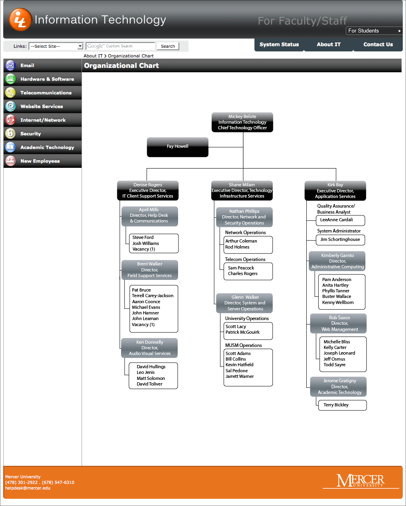

The IT website for Mercer University was redesigned in 2009. The old site was scrapped, and we started with a fresh start. The planning stages included a usability study for the navigation as well as parts of the content. There were many iterations of design for the main screen, about 60 or so, but we finally came to a design, that worked for the customer. My main focus was on the ease of use of the website, how to find information quickly, for users who had computer problems or needed IT support. Color coding the various divisions in the IT department was key, as well as icons that will illustrate what the division is all about without the caption or accompanying text. At the time, accordion navigation was ideal since it collapsed and expanded, using mouseover and user clicks. This way we can limit the scrolling for the user, based on the selection of the subsite in the navigation.
Since we had to have a student section as well, and 60% of the items were similar, we used includes to populate most of the content. Once again, color coding was important to distinguish between faculty and staff, and student websites.
